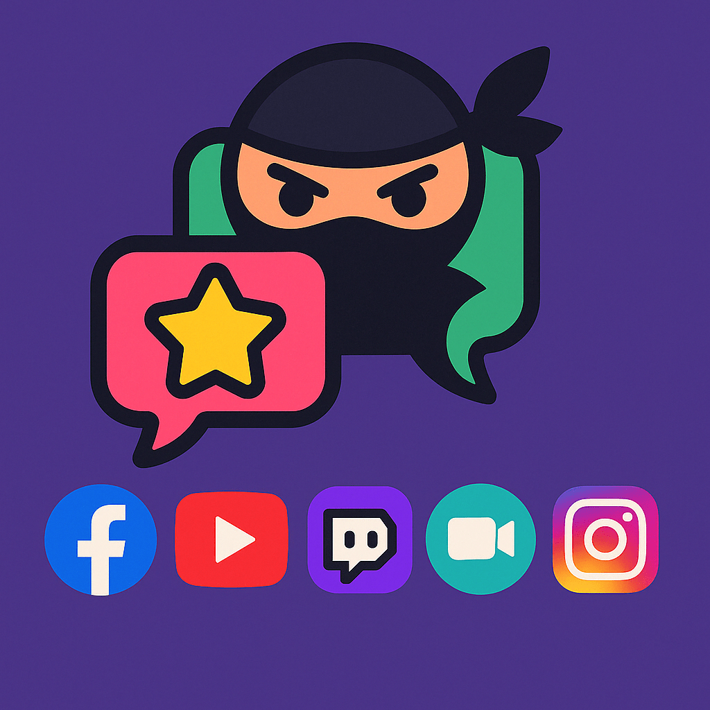
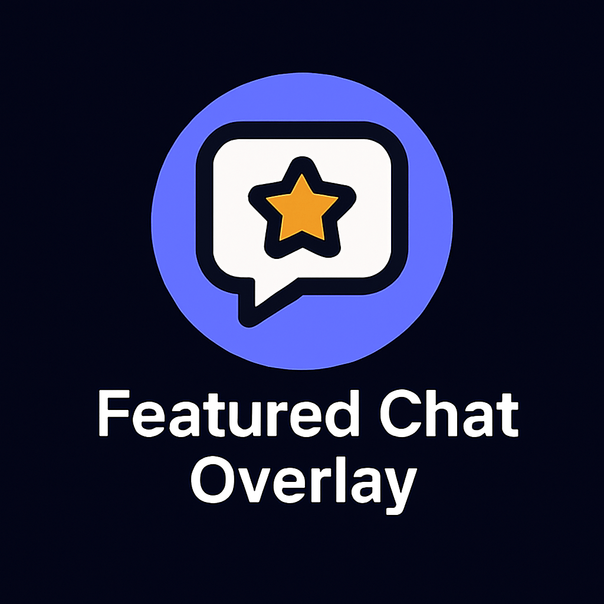
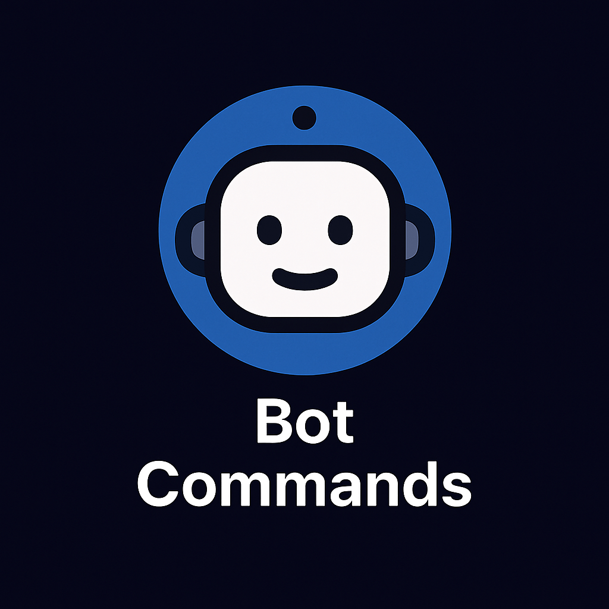
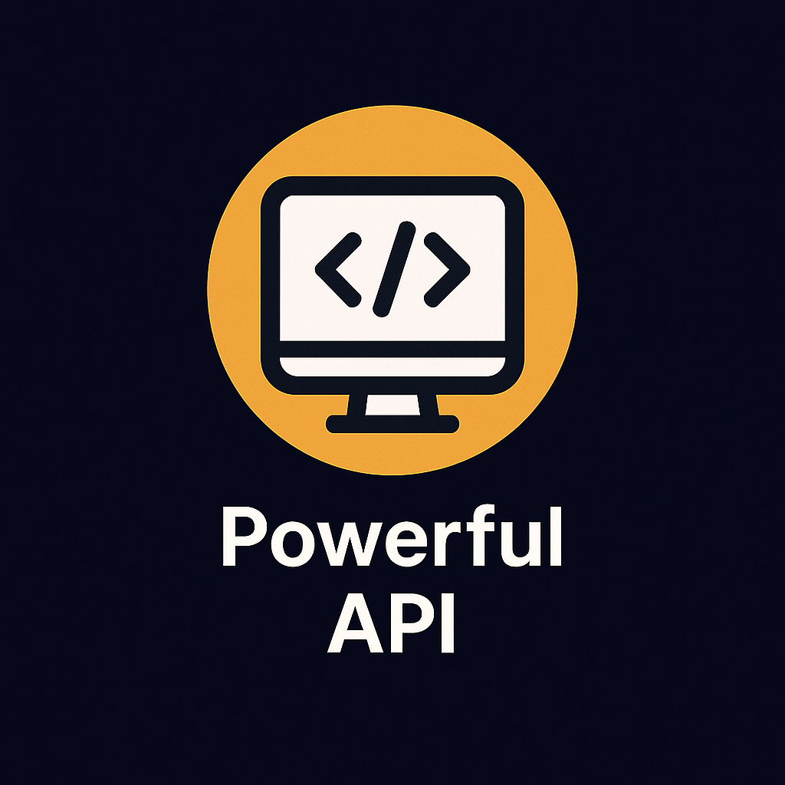
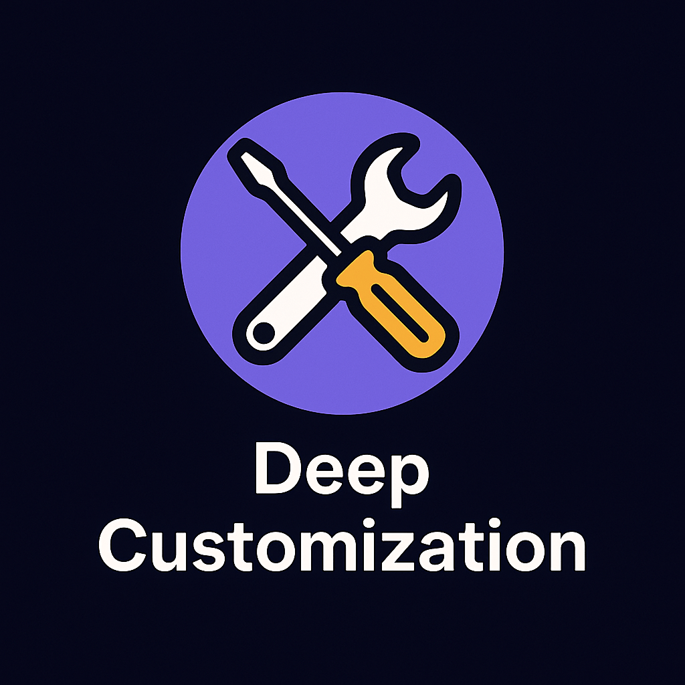
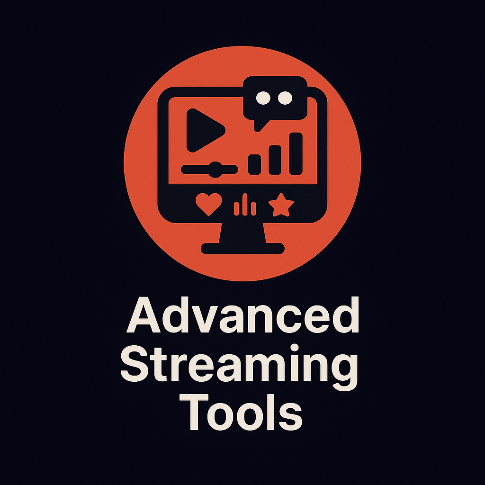

Riunisci le tue chat, porta il pubblico sullo schermo e dai a ogni diretta il tuo stile.
Esplora 126 idee per le dirette · Anteprima delle ricompense sticker

Interagisci contemporaneamente con gli spettatori di tutte le tue piattaforme. Social Stream Ninja riunisce i messaggi di chat di decine di piattaforme in un'unica dashboard facile da gestire.

Metti in evidenza i migliori messaggi del pubblico direttamente nella diretta con overlay belli e personalizzabili.

Crea interazioni automatiche con il pubblico tramite comandi e risposte personalizzati.
Scegli un co-conduttore vocale, un bot di chat, un assistente nel browser o strumenti mirati di elaborazione IA senza vincolare il resto della diretta a un unico provider.
Dai voce ai messaggi della chat con la sintesi vocale, rendendo la diretta più coinvolgente e accessibile.
Estendi le funzionalità di Social Stream Ninja con solide opzioni di integrazione API.

Rendi Social Stream Ninja davvero tuo grazie alle numerose opzioni di personalizzazione delle funzioni e dell'aspetto.

Migliora le tue dirette con la nostra serie di strumenti professionali pensati per coinvolgimento e interazione.

Social Stream Ninja funziona con oltre 100 piattaforme e servizi: ecco alcuni esempi
Non trovi la tua piattaforma? Unisciti al nostro Discord per richiedere una nuova integrazione oppure scopri come aggiungerla tu stesso.
| Metti in evidenza | Social Stream Ninja | Concorrenti |
|---|---|---|
| Costo | Gratuito e open source | Abbonamento da 10–50 USD al mese |
| Supporto delle piattaforme | Oltre 100 piattaforme | 1–5 piattaforme |
| Chiavi API necessarie | Nessuna per la maggior parte delle piattaforme | Richieste per la maggior parte delle piattaforme |
| Personalizzazione | Illimitata con CSS/JS | Modelli limitati |
| Chat bidirezionale | Sì, sulla maggior parte delle piattaforme | Limitato o a pagamento |
| Integrazione IA | Modelli locali, co-conduttore vocale, provider cloud e API personalizzate | Limitato o inesistente |
| Supporto della comunità | Comunità Discord attiva | Varia in base al provider |
| Estensioni | Aperto ai contributi | Ecosistema chiuso |
| Giochi interattivi | Minigiochi integrati | Non disponibile |
| Co-conduttore IA | Assistente IA multimodale | Non disponibile |
Inizia oggi a usare Social Stream Ninja e rendi il pubblico ancora più partecipe.